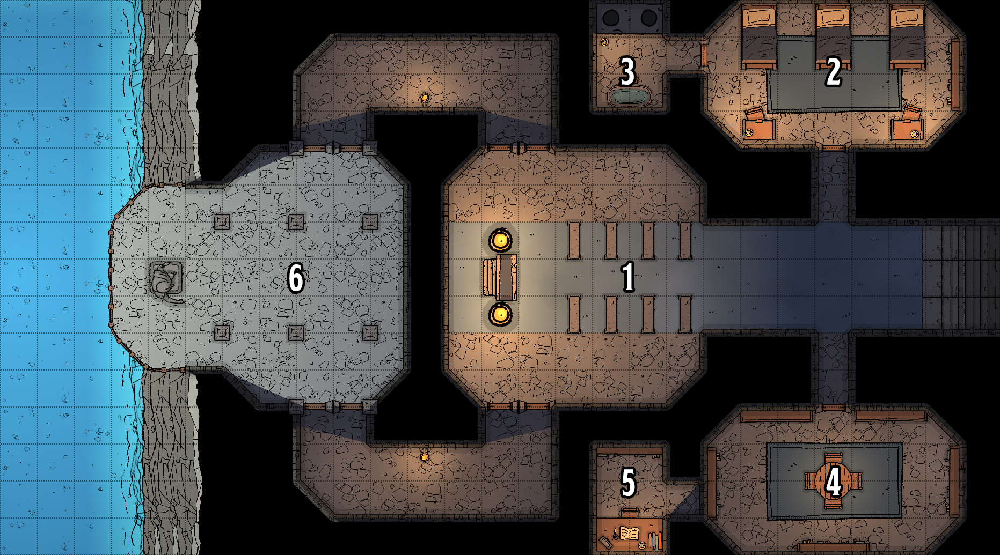

Il Tempio di Aylos
A mano a mano che salite la collina, vi trovate di fronte ad una grande struttura in legno e pietra incastonato nella collina. Le sue porte sono socchiuse.
Questo è il tempio di Aylos. È dove padre Pio si trova in questo momento, nella sua nuova forma abissale. Quando i personaggi entrano, trovano il tempio pressocchè abbandonato.
- Soffitti i soffitti sono alti 3 metri e sono di pietra
- Pavimento e pareti il pavimento è fatto di roccia e le pareti sono di granito acciottolato
- Porte Le porte sono di solida quercia e rinforzate con sbarre di metallo. Sono tutte aperte a meno che non sia specificato altrimenti
- Illuminazione il tempio è leggermente illuminato da bracieri e lanterne

1) Santuario
Un piccolo altare siede contro il muro in fondo alla camera. A precederlo, molte panchine in pietra, mentre ,ai lati, due porte, una a destra e una a sinistra
L'altare è consacrato a Aylos. Chiunque faccia una preghiera riceve un' Ispirazione
2) Alloggio
Ci sono tre piccoli letti e due scrivanie
Qui è dove padre Pio e i suoi ospiti vivevano. La stanza è in completo disordine
- Tesoro: Arpione sul muro c'è un arpione a +1
3) Bagno
Ci sono due piccoli gabinetti e una grande vasca da bagno
Chiunque abbia successo in una prova di Investigare con CD 14 trova un simbolo sacro di Aylos nella vasca da bagno. Vale 50 monete d'oro.
4) Studio
Al centro della stanza si trova un piccolo tavolo. Alle pareti, molte librerie.
I libri nella stanza sono tutti di argomento religioso, in particolare, Aylos e la storia dei suoi fedeli
- Porta Segreta la libreria a ovest può essere spostata per rivelare una piccola porta. può essere scoperto se si riesce in una prova di Percezione con CD 14
5) Studio Segreto
Questa piccola stanza contiene solo una mensola, una scrivania e una sedia. Sulla scrivania è aperto un libro.
Questa stanza era usata da padre Pio come studio privato. Se qualcuno legge il libro, scopre che è il diario di padre Pio. Su questo c'è scritto che:
- padre Pio ha stretto un patto con una voce proveniente dall'Abisso per riportare l'isola alla sua vecchia gloria
- ha scambiato sei anni di prosperità per una fetta della ricchezza dell'isola
- teme che la voce si prenda più di quello che lui pensasse
6) Terrazza sul Mare
Il sole illumina questo traforo nella roccia e brilla sulla statua di Seafather.Prima di lui, si trovano tre uomini pesce, uno di questi è più alto degli altri di diverse spanne.
- Incontro: padre Pio e minion qui è dove padre Pio era solito pregare Aylos, ma ora il vecchio è diventato uno sciamano degli sahuagin, fedele alla Voce dell'Abisso. Insieme a due sahuagin purosangue, aspetta ordini dal suo nuovo padrone. Quando i personaggi arrivano, ordina ai suoi minion di attaccare, mentre lui rimane indietro e lancia incantesimi come guiding bolt o sacred flame. Se ingaggiato in corpo a corpo, utilizza la sua abilità Eminenza Divina per aumentare i suoi danni inflitti.
- Tesoro: gemme gli occhi della statua di Seafather sono gemme che valgono 250 monete d'oro l'una.